La persistencia de datos es un asunto muy importante en las aplicaciones móviles.
La primera razón es conocida por todos y ocurre cuando se cambia la orientación/configuración del dispositivo, esto se ha solucionado con el uso de estados
y de ViewModel.
Pero existen otras situaciones donde es interesante poder guardar los datos para su posterior uso.
En esta unidad se estudiarán las siguientes herramientas para implementar la persistencia de datos:
File System.
Datastore.
Room.
File System
Como en cualquier sistema operativo, Android usa un sistema de archivos (File System).
Este sistema de archivos permite varias opciones para guardar los datos de la aplicación:
Almacenamiento específico de la aplicación (App-specific storage).
Almacenamiento compartido (Shared storage).
Preferencias.
Bases de datos.
Almacenamiento específico de la aplicación (App-specific storage)
Almacena archivos destinados solo para el uso desde la propia aplicación.
Se pueden crear carpetas dedicadas en el almacenamiento interno y en el externo.
Se debe usar el almacenamiento interno para información confidencial (otras Apps no tendrán acceso a él).
Almacenamiento compartido (Shared storage)
Almacena archivos que la aplicación puede compartir con otras aplicaciones como son documentos, media (audio, vídeo…) u otros archivos.
Preferencias
Almacenamiento privado para la aplicación. Permite pares clave-valor.
Bases de datos
Almacena datos estructurados de manera privada usando la librería Room (framework que usa SQLite)
A la hora de elegir un tipo de almacenamiento entran diferentes variables:
Tamaño de los datos a almacenar: el almacenamiento interno tiene espacio limitado.
Asegurar el acceso a los datos: mejor el almacenamiento interno o una base de datos ya que no siempre se tiene acceso al almacenamiento externo.
Tipo de datos: si no se deben compartir los archivos se debe usar el almacenamiento específico de la aplicación.
Privacidad de los datos: si se trabaja con datos sensibles se deben almacenar en las preferencias, en una base de datos o el almacenamiento interno. Este último además oculta los datos a los usuarios.
Alamacenamiento Específico de la app
Android ofrece las siguientes localizaciones destinadas para uso exclusivo de la aplicación.
Directorios en el almacenamiento interno:
Android evita que otras aplicaciones accedan a estas ubicaciones.
A partir de Android 10 (API 29) y superiores estas ubicaciones están encriptadas.
Son un buen lugar para almacenar datos sensibles.
Suelen tener poca capacidad.
Directorios en el almacenamiento externo:
Son ubicaciones destinadas al uso exclusivo de la aplicación aunque otras aplicaciones con los permisos adecuados podrían acceder a esas ubicaciones.
Si se van a crear archivos destinados a ser compartidos con otras aplicaciones, estos deberían crearse en el espacio compartido del almacenamiento externo.
Las dos opciones incluyen un directorio para almacenar archivos persistentes y otro para caché.
Acceso a archivos del almacenamiento interno
Los archivos comunes y persistentes se encuentran en un directorio al que se puede acceder utilizando la propiedad
filesDir de un objeto contexto (como ya se ha visto anteriormente se puede obtener
el contexto de diferentes maneras).
Mediante la API File (similar a Java) se puede acceder a los archivos y almacenar archivos.
Para que el rendimiento de la aplicación no se vea afectado no se debe abrir y cerrar el mismo archivo muchas veces.
A continuación se muestra como abrir un archivo con la API:
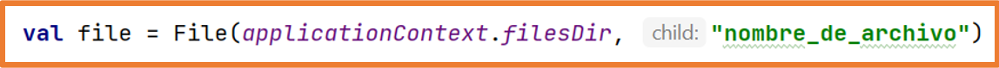
Almacenar un archivo usando un Stream
Como alternativa a la API File se puede utilizar el método openFileOutput() para conseguir un objeto
FileOutputStream que permite escribir en un archivo dentro del directorio filesDir.
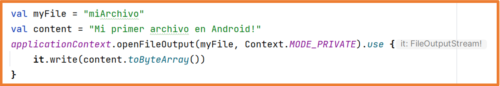
Desde Android Studio desde el Device File Explorer se pueden ver los archivo creados:
data -> data -> nombredelpaquete -> files
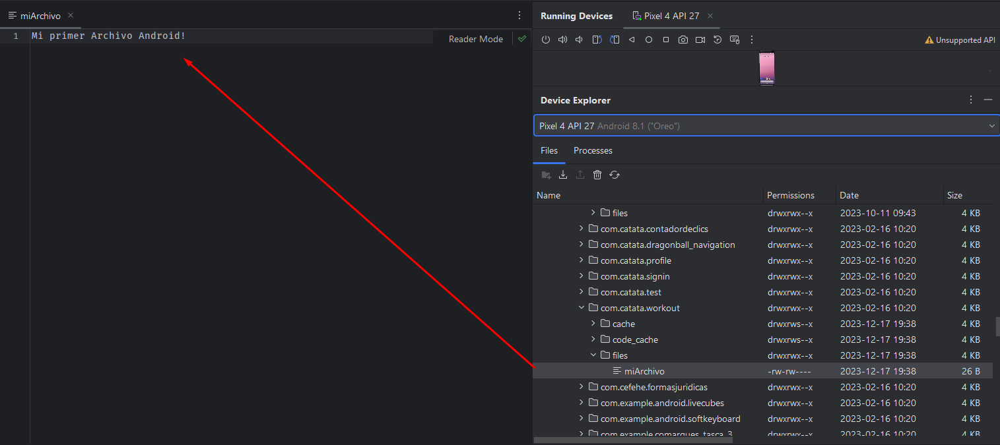
En versiones Android 7 (API 24) o superiores en el caso de no indicar el Context.MODE_PRIVATE se obtendrá una excepción de seguridad
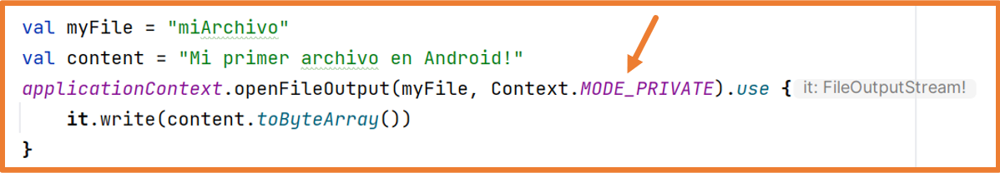
Si se quiere permitir que otras aplicaciones accedan a los archivos del almacenamiento interno se debe usar un
FileProvider
al que se le debe indicar el atributo FLAG_GRANT_READ_URI_PERMISSION.
Para leer el contenido de un archivo se usa el método openFileOutput()
para obtener un objeto BufferedReader que devuelva una secuencia de cadenas (una por cada línea del archivo):
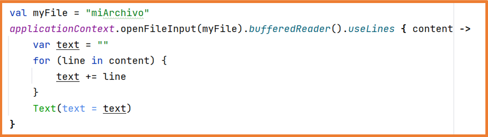
Visualizar lista de archivos
Se puede obtener un array con los nombres de los archivos del directorio filesDir utilizando el método fileList():
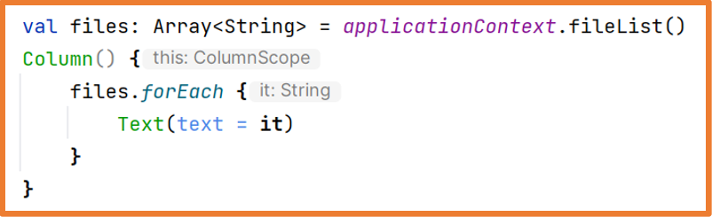
Subdirectorios
Si es necesario se pueden crear subdirectorios con el método getDir().
Este método también permite acceder a los subdirectorios creados.
Este método tiene un pequeño inconveniente y es que crea el directorio con el prefijo app_
y fuera del directorio files:
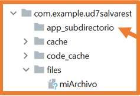
Para crear subdirectorios dentro de files se pueden utilizar las funciones de la clase File como en Java.
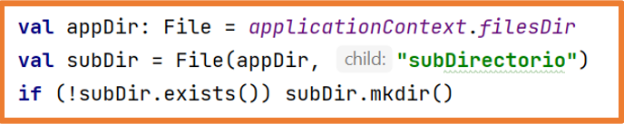 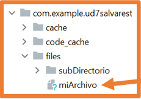
Cache
Si se tienen que almacenar temporalmente archivos con datos sensibles se deben almacenar en el directorio chache.
Para crear un archivo en almacenamiento cache se utiliza
File.createTempFile(), se debe indicar el prefijo (nombre),
el sufijo (extensión, por defecto .tmp) y un objeto contexto:
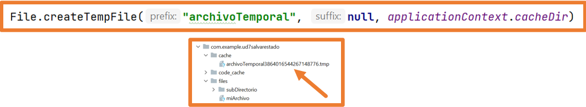
Para acceder a los archivos ubicados en el directorio cache se debe usar la propiedad cacheDir sobre un contexto y la clase
File:
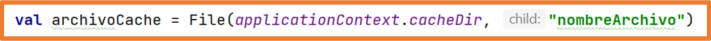
La gestión del directorio cache la gestiona Android,
si la aplicación se queda sin espacio entonces Android eliminará archivos almacenados en ese directorio.
Es posible eliminar archivos del directorio cache usando uno de los siguientes métodos.
Usando un objeto File y el método delete:
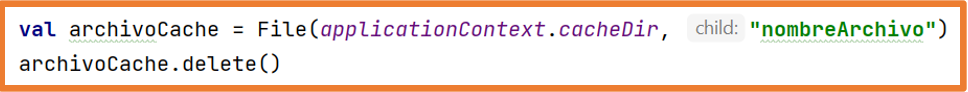
Usando el método deleteFile sobre el contexto:
Acceso al almacenamiento externo
Si se necesita un espacio extra para almacenar archivos específicos de la aplicación se puede usar el almacenamiento externo siempre que esté disponible.
El almacenamiento externo puede ser una partición en la memoria interna pero también puede ubicarse en un dispositivo de almacenamiento externo conectado como puede ser una tarjeta SD o incluso un pendrive conectado al USB.
En las ocasiones en las que el almacenamiento externo se ubica en un dispositivo de almacenamiento conectado, este almacenamiento puede dejar de estar disponible, por ejemplo una tarjeta SD que se extrae del dispositivo.
Así que no es conveniente crear en el almacenamiento externo archivos de los que dependa el funcionamiento correcto de la aplicación.
Verificar la disponibilidad del almacenamiento externo
Es importante verificar que el almacenamiento externo esté disponible antes de intentar leer o guardar información en él.
Mediante la clase Environment y su método getExternalStoragareState
se puede consultar la disponibilidad del almacenamiento externo así como los permisos sobre él.
Si el estado es MEDIA_MOUNTED se tendrán permisos de lectura y escritura,
si el estado es MEDIA_MOUNTED_READ_ONLY solo se tendrán permisos de lectura.
Una buena manera de comprobar esto sería con las funciones siguientes:
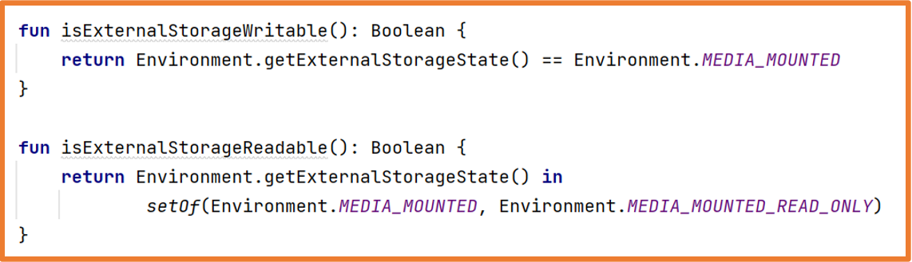
Seleccionar una ubicación del almacenamiento externo
Como el almacenamiento externo puede estar tanto en la memoria interna como en un dispositivo conectado,
a la hora de almacenar información en el almacenamiento externo se debe elegir la ubicación.
Para acceder a las ubicaciones se debe usar la clase ContextCompat y su método getExternalFilesDirs.
De esta manera se obtendrá un array con todos los volúmenes disponibles.
Por norma general el primer elemento del array será el volumen principal de almacenamiento externo
y es el que se debe usar a menos que esté lleno o no disponible.
Con el siguiente código se obtendría la ruta del volumen principal del almacenamiento externo.
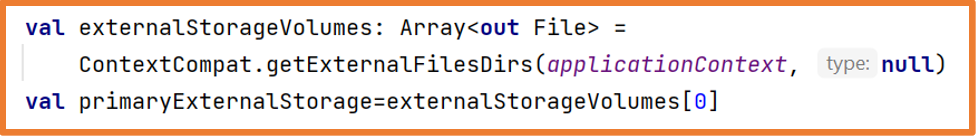
Comprobando el tamaño del array externalStorageVolumes se podría conocer si existe algún volumen más.
En el emulador usado en clase la posición 1 del array es la emulación de una tarjeta SD conectada al dispositivo virtual.
Acceder a los archivos del almacenamiento externo
Para acceder a los archivos del almacenamiento externo se debe usar el método getExternalFilesDir
de un objeto contexto.
>
Para que el rendimiento de la aplicación no se vea afectado no se debe abrir y cerrar el mismo archivo muchas veces.
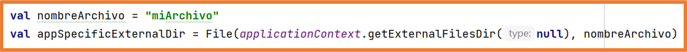
En Android 11 (API 30) y superiores no se permite crear subdirectorios en el almacenamiento externo.
Crear archivos en la caché del almacenamiento externo
Para crear un archivo en la caché del almacenamiento externo se utiliza la propiedad externalCacheDir de un objeto
contexto:
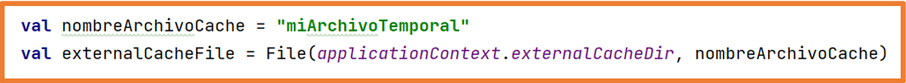
Eliminar archivos de la caché del almacenamiento externo
Se debe usar el método delete sobre un objeto de la clase File que represente al archivo a borrar.
Contenido multimedia
Si la aplicación funciona con archivos multimedia que no son indispensables pero sí aportan valor a la experiencia de usuario,
lo mejor es almacenarlos en el almacenamiento externo:
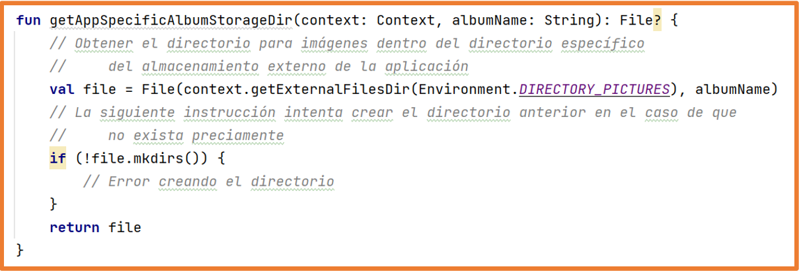
Para el buen funcionamiento de la aplicación es importante utilizar los nombres de directorios que aporta la API
con las constantes de la clase Environment:
Si ninguno de los nombres predefinidos se adapta a las necesidades de la aplicación se puede pasar null al método
getExternalFilesDir.
De esta manera se almacenarán los archivos directamente en el directorio raíz del almacenamiento externo específico de la aplicación.
Consulta espacio libre
Algunos dispositivos tienen un espacio de almacenamiento muy limitado por lo que
al desarrollar una aplicación se debe tener especial cuidado con el espacio que ocupa la aplicación.
Una buena práctica antes de almacenar un archivo es comprobar si el archivo cabe en el espacio disponible.
Pero no es necesario comprobar el espacio libre entre otras razones porque hay veces que no se sabe cuánto va a ocupar el archivo,
en estos casos se puede intentar guardar el archivo capturando la excepción IOException
que se lanzará si no se consigue almacenar el archivo.
Para comprobar el espacio libre que puede proporcionar el dispositivo se utiliza el método getAllocatatableBytes.
Este método en ocasiones puede mostrar más capacidad de la real debido a que es posible que el sistema haya detectado archivos
en la caché de otras aplicaciones y si fuera necesario los borraría.
Si hay espacio suficiente se debe usar el método allocateBytes.
Si no se usa este método la app puede solicitar al usuario que elimine archivos o que borre toda la caché del dispositivo.
El siguiente código muestra cómo obtener el espacio libre del dispositivo:
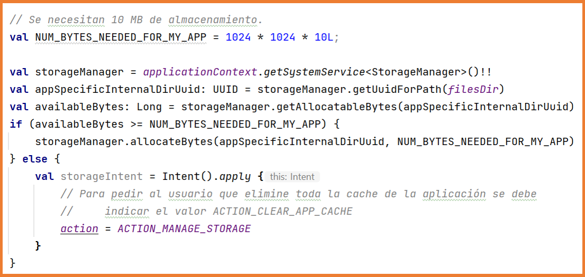
DataStore
DataStore permite almacenar en el dispositivo conjuntos de datos pequeños o simples.
Los datos almacenados con DataStore se guardan en el almacenamiento interno específico de la aplicación
por lo que ninguna otra aplicación podrá acceder a ellos.
Proto DataStore: almacenar objetos (instancias de clases).
Debido a la complejidad de desarrollo de Proto DataStore, en clase solo se estudiará Preferences DataStore.
DataStore permite crear archivos para guardar información, generalmente preferencias.
La ventaja de DataStore radica en que es el sistema operativo el que maneja toda la gestión de los archivos de preferencias.
Reglas para usar DataStore:
Solo mantener una instancia de DataStore abierta sobre el mismo archivo.
El tipo genérico de DataStore debe ser inmutable.
No mezclar nunca SingleProcessDataStore y MultiProcessDataStore para el mismo archivo.
Preferences DataStore
Preferences DataStore permite almacenar pares clave-valor.
Los datos que se pueden almacenar serán de tipos básicos:
Int
Double
String
Boolean
Float
Long
Además se ofrece la posibilidad de almacenar un conjunto de cadenas:
Set<String>
Lo más habitual es que las preferencias se guarden y recuperen desde el ViewModel para poder mantener las variables de estado de manera correcta.
Así, para mantener una buena estructura de archivos en el proyecto se recomienda crear un paquete llamado preferences
donde se ubicará una la clase en la que se implementará toda la lógica de guardado y recuperación de los valores de las preferencias.
Esta nueva clase se utilizará desde el ViewModel correspondiente.
Preferences DataStore hace uso de corrutinas y de Flows (flujos de datos).
Los Flow permiten emitir varios valores de manera secuencial que se recogerán desde una corrutina, por ejemplo,
se pueden usar para recibir actualizaciones en vivo desde una base de datos.
Un Flow es similar a un Iterator pero que usa funciones de suspensión para producir y consumir los valores.
En Preferences DataStore se usa un Flow para recuperar los datos.
Preferences DataStore también necesita el contexto de la aplicación para la correcta gestión de los archivos de preferencias.
Creación de Ejemplo
El primer paso para poder usar Preferences DataStore es añadir la dependencia en build.gradle.kts (Module) y sincronizar
class AppPreferences(val context: Context) {
//Variables estáticas para representar las calves de los valores a guardar
companion object{
val NAME = stringPreferencesKey("NAME")
}
//Variable DataStore a la que se le pasa el nombre del archivo de preferencias "preferences"
//Al declararla con el delegado "by" la variable será un singleton: solo habrá una instancia
private val Context.dataStore: DataStore<Preferences> by preferencesDataStore(name = "preferences")
//Función que recibe un String y lo almacena en el archivo de preferencias declarado en el DataStore
//El guardado se debe realizar en segundo plano por lo que necesitará una corrutina para ello
//se añade la palabra suspend para indicar que cuando se realice la llamada se use una corrutina
suspend fun saveFullName(name: String){
context.dataStore.edit {preferences ->
preferences[NAME] = name
}
}
//Función que recupera un String del archivo de preferencias declarado en el DataStore.
//Esta función devuelve un Flow
fun loadName()= context.dataStore.data.map { preferences ->
preferences[NAME] ?: ""
}
}
ViewModel que hace uso de la clase anterior
//Como se necessita el contexto el viewModel se extiende de AndroidViewModel para que el propio
//Sistema operativa le pase el objeto Application del que se recuperará el contexto
class PreferencesViewModel(application: Application):AndroidViewModel(application) {
//Declaración del objeto para guardar/almacenar preferencias
private val preferences = AppPreferences(application.applicationContext)
private val _fullName = MutableLiveData<String>()
val fullname: LiveData<String> = _fullName
fun onFullNameChange(fullName:String){
_fullName.value = fullName
}
//Método que llama a AppPreferences para almacenar la preferencia en el archivo de preferencias
fun saveFullName(name: String){
viewModelScope.launch {
preferences.saveFullName(name)
_fullName.postValue("")
}
}
//Método que llama a Appreferences para recuperar la preferencia del archivo de preferencias
fun loadFullName(){
viewModelScope.launch {
//Como loadName devuelve un Flow para recuparar sus datos se usa el método collect()
preferences.loadName().collect(){
_fullName.postValue(it)
}
}
}
}
En las diferentes pantallas de la aplicación si se necesita guardar o recuperar datos del archivo de preferencias se hará uso de los métodos del ViewModel:
Si se quieren guardar datos de más complejidad como son objetos, en la clase que almacena las preferencias se debe deconstruir y construir ese objeto.
Clase para guardar/recuperar preferencias: